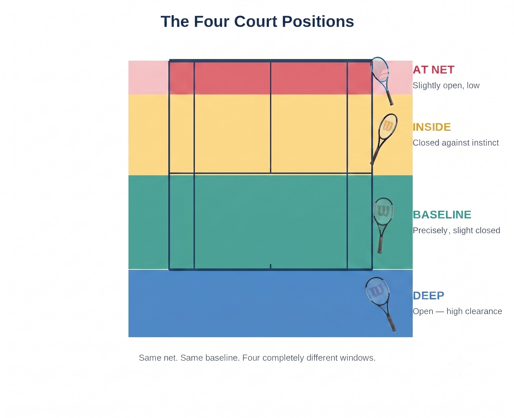
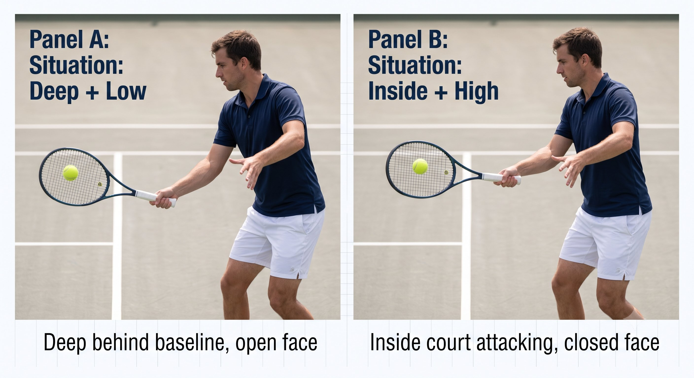
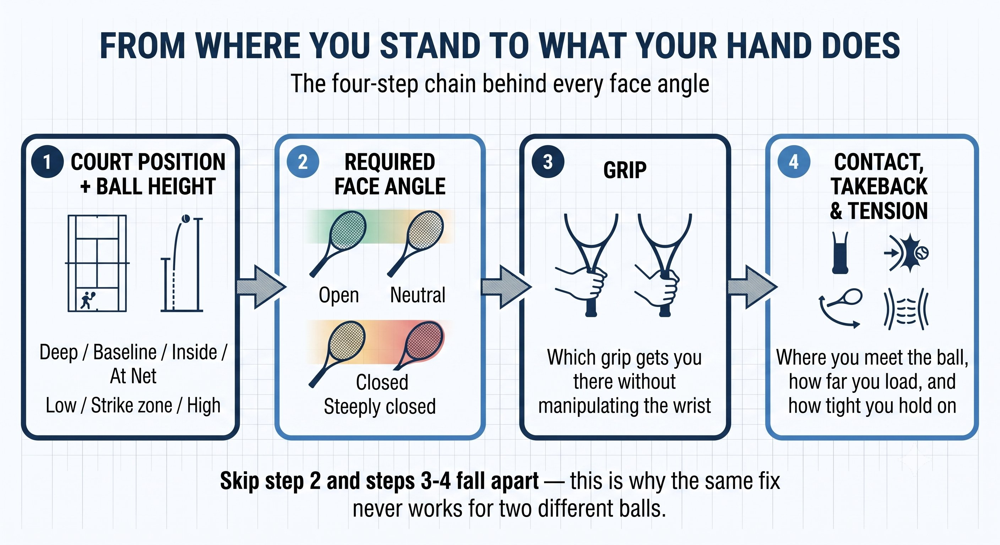

Chapter 1: The Problem
(English version of Chapter 1 in the United Tennis Handbook)
CHAPTER 1

Figure 1
THE PROBLEM
Court Position and Ball Height Decide Your Face Angle
Before you pick a grip, choose a swing, or set your arm tension, the court and the ball have already made the call. Between them, they decide the one thing you actually have to deliver on every shot: the angle of your racket face at contact.
You don't choose your face angle. The court and the ball's height decide what face angle you must deliver to keep the ball in play.
— Henry Pham
The Fundamental Equation
Every shot in tennis solves the same fixed problem. The net stands three feet high (three and a half at the posts), the baselines don't move, and the ball is going to arrive at some height, travelling at some speed. None of that is up for negotiation. The only thing you bring to the equation is what your body and your racket do once the ball is already on its way.
The court and the ball tell you three things before you ever swing:
– Where you're standing: deep behind the baseline, on the baseline, inside the court attacking, or already at net.
– How high the ball is arriving: low, in your strike zone, or high.
– How fast it's coming: fast (serve or drive), medium (rally pace), or slow (lob, drop shot).
Put your position and the ball's height together and you get a window — a specific range of face angles that will keep the ball inside the lines. That window isn't a preference. It's geometry, and geometry doesn't negotiate.
Figure 1.1: The window isn't a preference — it's geometry. Deep in the court, the window is wide and forgiving. Move inside, and the same shot demands a face angle with almost no margin for error.

Figure 2
The Four Court Positions
Your position on the court changes how much room you have to work with. The table below lays out what each position gives you.
Figure 1.2: Same net. Same baseline. Four completely different windows — because your distance from the net changes the geometry every time.

Figure 3
How Ball Height Narrows the Window
Position alone doesn't finish the job — where the ball meets you matters just as much. Cross ball height with position and the window gets a lot more specific.
Figure 1.3: Read this grid like a weather map: the closer to net and the higher the ball, the more the face must close. That pattern — not any single cell — is the thing to memorize.

Figure 4
The Principle
Court and ball height dictate the face angle you're required to deliver. Your technique — grip, contact point, tension — exists to deliver that face, not to decide it.
Reading the Court as a Decision Map
Once you know the required face, the technical choice becomes obvious. Treat it as if/then logic: the court hands you the problem, and your technique is the answer.
Figure 1.4: Same swing philosophy, two completely different face angles — because the court and the ball, not the player's preference, made that call.

Figure 5
Coach's Note
Next time you sail a ball long, ask yourself one question: was I inside the court with an open face? Next time you dump one into the net, ask: was I deep with a closed face? The court told you the answer before you ever swung.
Why This Matters for Everything Else in This Book
Every idea in the chapters ahead — grip, contact point, takeback, arm tension, Quiet Eye, the figure-8, the 45-degree plane, the braking impulse, Jin — exists to solve this one problem: deliver the face angle the court demands, at the exact point the ball will be, with whatever energy the time available lets you generate.
Understand the problem first and the solutions stop feeling like guesswork. Skip straight to solutions — a grip change here, a swing thought there — without first diagnosing the court-and-ball equation, and you're just guessing with better vocabulary.
Court position + ball height → required face angle → then choose grip, contact, takeback, and tension to deliver it.
THE COURT TELLS YOU WHAT. YOUR TECHNIQUE DELIVERS HOW.
Figure 1.5: This is the one diagram to memorize before Chapter 2. Everything else in this book is an answer to the last box.
Key Takeaways
– Before every shot, run the check: Where am I? Where will the ball be? What face do I have to deliver?
– Deep + low — open the face, load a long takeback, hit heavy topspin.
– Deep + high — close the face and drive down into the court.
– Inside + low — close the face against instinct, lift with your legs, shorten the takeback (or slice).
– Inside + high — flatten the face and punch through with a short, compact swing.
– At net — keep the face slightly open, block or push, Continental grip.
Where This Leads
This chapter sets up the core framework for the whole system: court and oncoming ball determine the required face, and your racket system plus available energy deliver it. Chapters 2 through 6 build that delivery system — grip, contact, takeback, tension. Chapters 8 through 18 build the control platform behind it: Quiet Eye, vestibular stability, fascia and proprioception, tensegrity, the stretch-shortening cycle, the figure-8, the 45-degree plane, the braking impulse, and rooting. Chapters 19 through 25 apply all of it to every shot you'll actually hit on court.